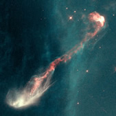
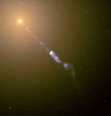

Jets are collimated beams of matter ejected from some astronomical objects like water from a hose. They occur in a number of astrophysical situations, but can be broadly divided into two main types:
- galactic jets are believed to have a single source – a supermassive black hole at the centre of a galaxy.
- stellar jets have several origins – they are produced by young stars still in the process of forming (e.g. T Tauri stars), in the planetary nebulae which mark the final stages of evolution for intermediate and low mass stars, and in compact objects such as neutron stars and stellar black holes in binary systems.
Not surprisingly, the scales of these jets vary widely. The stellar jet from Herbig-Haro object HH-47 (below, left) is only 0.5 light years from end to end, while the galactic jet emitted by M87 (below, right), is over 6,000 light years long (and although not seen in the image, presumably extends for the same distance on the other side of the galaxy).
|

HH-47 is a star still in the process of forming. The jets of material, which are half a light year long, emanate from the tiny bright dot at the centre of the image. However, this dot is not the star itself, but a Solar System sized region of material surrounding the young protostar.
Credit: STScI & NASA |

The jet from the centre of the elliptical galaxy, M87, is powered by the supermassive black hole at its centre.
Credit: NASA and The Hubble Heritage Team (STScI/AURA). |
Although the formation of jets is not fully understood, it is generally believed that they result when the magnetic field of the central object (the star or black hole) interacts with the magnetic field of the surrounding accretion disk. The exception is for pulsar jets, where the magnetic field responsible for the jet is produced by the pulsar alone (there is no accretion disk).